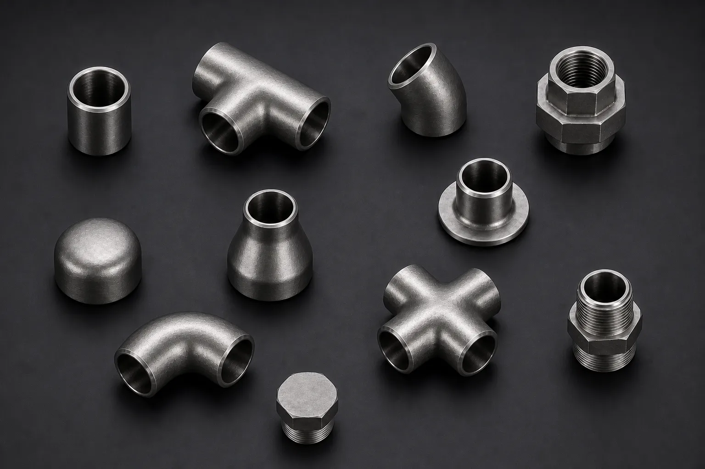

Gururaj Infradesigns is a trusted Hastelloy C22 Pipe Fittings Manufacturer and Supplier in India, offering ASTM B366 / ASME SB366 elbows, tees, reducers, pipe caps, stub ends, and crosses with exceptional corrosion resistance for chemical processing, marine, pharmaceutical, and petrochemical applications.
Hastelloy C22 Pipe Fittings are premium nickel-chromium-molybdenum alloy fittings developed for highly corrosive industrial environments. Known for their exceptional resistance to oxidizing and reducing chemicals, these fittings are widely used in chemical processing, pollution control systems, pharmaceuticals, marine applications, and petrochemical industries. Gururaj Infradesigns is a trusted Hastelloy C22 Pipe Fittings Manufacturer in India, supplying high-performance fittings engineered for critical process applications.
Our range includes elbows, tees, reducers, pipe caps, stub ends, and crosses manufactured to international standards and designed to provide outstanding corrosion resistance, mechanical strength, and long service life in aggressive service conditions.

Hastelloy C22 is a versatile nickel-based alloy containing chromium, molybdenum, tungsten, and iron. The alloy offers exceptional resistance to pitting, crevice corrosion, stress corrosion cracking, and chemical attack across a wide range of corrosive media. Its ability to withstand both oxidizing and reducing environments makes it one of the most widely used corrosion-resistant alloys in industrial piping systems.
As part of our comprehensive range of Nickel Alloy Pipe Fittings, Hastelloy C22 Pipe Fittings are widely selected for handling aggressive acids, chlorides, solvents, and process chemicals. Their superior corrosion resistance helps improve plant reliability, reduce maintenance requirements, and extend service life in demanding applications.
| Parameter | Details |
|---|---|
| Product | Hastelloy C22 Pipe Fittings |
| Standard | ASTM B366 / ASME SB366 |
| Dimensions | ANSI B16.9, B16.25, B16.28, MSS-SP-43, MSS-SP-48, MSS-SP-59 |
| Product Types | Elbow, Tee, Reducer, Pipe Cap, Stub End, Cross |
| Size Range | 1/8" NB to 48" NB |
| Type | Seamless, Welded (100% X-Ray Welded), Fabricated |
| Thickness | SCH 5S, SCH 10S, SCH 40S, SCH 80S, SCH 160S, SCH XXS |
| Bending Radius | R=1D, 2D, 3D, 5D, 6D, 8D, 10D or Custom |
| Manufacturing Standard | ASME / ANSI / ASTM |
| Certification | EN 10204 3.1 / MTC Available |
Hastelloy C22 Pipe Fittings offer exceptional resistance to a broad range of corrosive chemicals, including acids, chlorides, and oxidizing agents. This makes them a preferred choice for industries operating in highly aggressive processing environments.
The alloy provides superior protection against localized corrosion mechanisms such as pitting and crevice corrosion. Its performance in chloride-rich environments helps improve system reliability and reduce maintenance requirements.
One of the key advantages of Hastelloy C22 is its ability to perform effectively in both oxidizing and reducing chemical environments. This versatility allows it to be used across a wide range of industrial processes and applications.
Hastelloy C22 Pipe Fittings maintain their mechanical integrity and corrosion resistance even under severe processing conditions. This helps ensure safe operation and long-term performance in critical process systems.
The combination of excellent corrosion resistance, durability, and mechanical strength contributes to an extended service life. This helps reduce replacement frequency and lowers overall lifecycle costs for industrial piping systems.
| Element | Composition (%) |
|---|---|
| Nickel | Balance |
| Chromium | 20.0 – 22.5 |
| Molybdenum | 12.5 – 14.5 |
| Iron | 2.0 – 6.0 |
| Tungsten | 2.5 – 3.5 |
| Cobalt | Max 2.5 |
| Manganese | Max 0.50 |
| Silicon | Max 0.08 |
| Carbon | Max 0.015 |
| Property | Value |
|---|---|
| Tensile Strength | 690 MPa Min |
| Yield Strength | 310 MPa Min |
| Elongation | 45% Min |
| Density | 8.69 g/cm³ |
| Melting Range | 1325°C – 1370°C |
Hastelloy C22 Pipe Fittings are extensively used in chemical processing facilities handling aggressive acids, solvents, and highly corrosive process media. Their exceptional corrosion resistance helps improve plant safety and operational reliability.
These fittings are widely used in flue gas desulfurization units, scrubbers, and emission control systems where exposure to corrosive chemicals and acidic environments is common. Their durability helps extend equipment service life.
The alloy's excellent resistance to chemical attack and contamination makes it suitable for pharmaceutical manufacturing systems. It is often used in processing lines requiring reliable performance and material integrity.
Hastelloy C22 Pipe Fittings perform exceptionally well in marine environments due to their resistance to seawater, chlorides, and harsh atmospheric conditions. They are commonly used in offshore platforms and coastal processing facilities.
Petrochemical plants utilize Hastelloy C22 Pipe Fittings in critical piping systems exposed to corrosive chemicals and elevated temperatures. Their ability to withstand demanding service conditions helps ensure long-term operational efficiency.
| Property | Hastelloy C22 | Hastelloy C276 | Monel 400 |
|---|---|---|---|
| Corrosion Resistance | Excellent | Excellent | Very Good |
| Oxidizing Media Resistance | Superior | Excellent | Moderate |
| Reducing Media Resistance | Excellent | Superior | Good |
| Pitting Resistance | Excellent | Excellent | Good |
| Chloride Resistance | Excellent | Excellent | Very Good |
| Chemical Processing Use | Extensive | Extensive | Moderate |
| Marine Applications | Excellent | Excellent | Excellent |
| Fabrication Characteristics | Good | Good | Excellent |
| Service Life | Long | Long | Long |
| Typical Use | Chemical & Process Industries | Severe Corrosive Service | Marine & Industrial Applications |
Hastelloy C22 Pipe Fittings are often selected for applications involving both oxidizing and reducing chemicals. For extremely aggressive reducing environments, many industries choose Hastelloy C276 Pipe Fittings, while Monel 400 Pipe Fittings are commonly preferred for marine and seawater service applications.
| Finish | Benefits |
|---|---|
| Pickled | Removes surface contamination and improves corrosion resistance |
| Passivated | Enhances the protective oxide layer |
| Polished | Improves surface cleanliness and appearance |
| Mill Finish | Suitable for standard industrial applications |
Proper surface finishing helps maximize corrosion resistance and maintain long-term material performance.
Gururaj Infradesigns supplies Hastelloy C22 Pipe Fittings in various sizes, schedules, and configurations to support critical industrial piping projects. Our products are supplied to EPC contractors, engineering companies, fabricators, and industrial buyers requiring dependable nickel alloy piping solutions.
We focus on delivering quality products, technical support, and timely deliveries to help customers meet project timelines and operational requirements.
At Gururaj Infradesigns, quality remains an important part of our manufacturing and supply process. All pipe fittings undergo inspection for dimensional accuracy, workmanship, and material compliance before dispatch.
As an ISO Certified Company, we are committed to supplying reliable piping components that meet industrial expectations for quality, consistency, and performance.
Selecting the right nickel alloy pipe fitting depends on factors such as chemical exposure, operating temperature, pressure conditions, and corrosion requirements. Choosing the appropriate material grade helps improve equipment reliability, safety, and service life. Our team assists in selecting the right fitting type, size, and specification based on your project needs. We help EPC contractors, fabricators, consultants, and industrial buyers with practical and application-based technical guidance for demanding process environments.